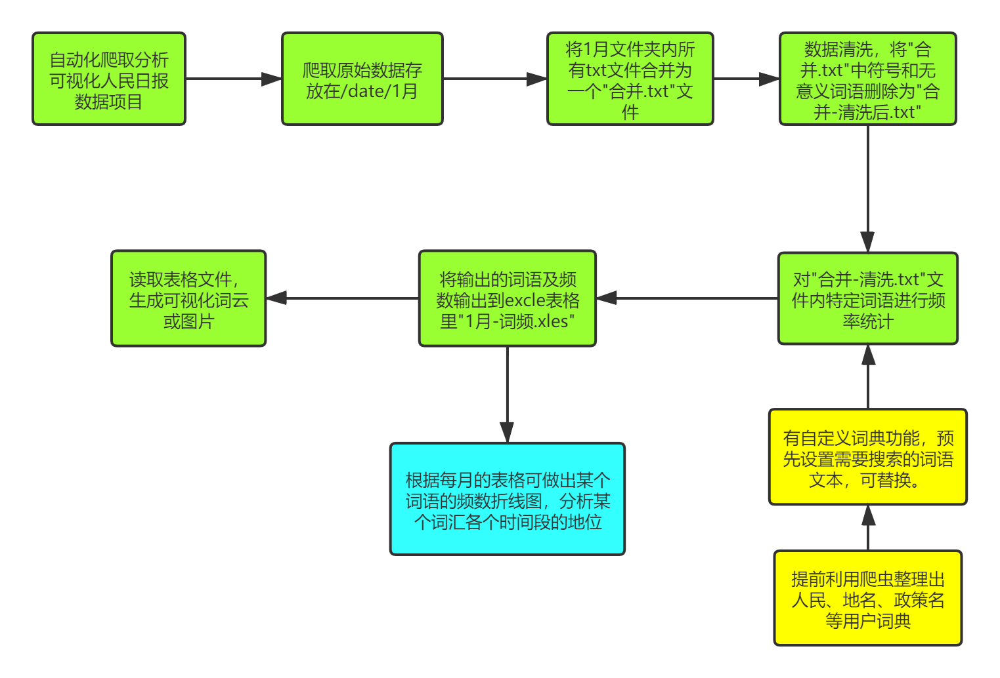

技术小白写的技术向学习文章
最近在琢磨一个项目，利用人民日报的数据来分析官方的语文表达喜好（不往后搞了，不然我肯定会被封）。不是我的原创，是之前看其他公众号做过的，后来因为审核原因那个公众号被封了。
这种研究的的软件和思路是很多的，做的人也很多。主要是卖广告的分析用户和学术项目来研究。但都不对外开放，所以我还得全部自己来，顺便锻炼学习学习。
确定整个项目的运行思路

##绿色为项目进行的主步骤
##黄色为某一步的准备工作
##蓝色为项目的可拓展功能
动手开干
爬虫部分
作为一个技术小白，编程啥都都不会，只知道爬虫使用python来做的，需要编程序的部分就不卡住了。不过我一直相信互联网环境下大概率有现成的轮子，不用自己再去造。多年网络生活让我练就一身好的搜索本领，经过几天的全网搜索，在CSDN社区找到一个可行的程序。（不得不吐槽现有的所有的搜索系统真的不太行）
import requests
import bs4
import os
import datetime
import time
def fetchUrl(url):
'''
功能：访问 url 的网页，获取网页内容并返回
参数：目标网页的 url
返回：目标网页的 html 内容
'''
headers = {
'accept': 'text/html,application/xhtml+xml,application/xml;q=0.9,image/webp,image/apng,*/*;q=0.8',
'user-agent': 'Mozilla/5.0 (Windows NT 10.0; WOW64) AppleWebKit/537.36 (KHTML, like Gecko) Chrome/68.0.3440.106 Safari/537.36',
}
r = requests.get(url,headers=headers)
r.raise_for_status()
r.encoding = r.apparent_encoding
return r.text
def getPageList(year, month, day):
'''
功能：获取当天报纸的各版面的链接列表
参数：年，月，日
'''
url = 'http://paper.people.com.cn/rmrb/html/' + year + '-' + month + '/' + day + '/nbs.D110000renmrb_01.htm'
html = fetchUrl(url)
bsobj = bs4.BeautifulSoup(html,'html.parser')
pageList = bsobj.find('div', attrs = {'id': 'pageList'}).ul.find_all('div', attrs = {'class': 'right_title-name'})
linkList = []
for page in pageList:
link = page.a["href"]
url = 'http://paper.people.com.cn/rmrb/html/' + year + '-' + month + '/' + day + '/' + link
linkList.append(url)
return linkList
def getTitleList(year, month, day, pageUrl):
'''
功能：获取报纸某一版面的文章链接列表
参数：年，月，日，该版面的链接
'''
html = fetchUrl(pageUrl)
bsobj = bs4.BeautifulSoup(html,'html.parser')
titleList = bsobj.find('div', attrs = {'id': 'titleList'}).ul.find_all('li')
linkList = []
for title in titleList:
tempList = title.find_all('a')
for temp in tempList:
link = temp["href"]
if 'nw.D110000renmrb' in link:
url = 'http://paper.people.com.cn/rmrb/html/' + year + '-' + month + '/' + day + '/' + link
linkList.append(url)
return linkList
def getContent(html):
'''
功能：解析 HTML 网页，获取新闻的文章内容
参数：html 网页内容
'''
bsobj = bs4.BeautifulSoup(html,'html.parser')
# 获取文章 标题
title = bsobj.h3.text + '\n' + bsobj.h1.text + '\n' + bsobj.h2.text + '\n'
#print(title)
# 获取文章 内容
pList = bsobj.find('div', attrs = {'id': 'ozoom'}).find_all('p')
content = ''
for p in pList:
content += p.text + '\n'
#print(content)
# 返回结果 标题+内容
resp = title + content
return resp
def saveFile(content, path, filename):
'''
功能：将文章内容 content 保存到本地文件中
参数：要保存的内容，路径，文件名
'''
# 如果没有该文件夹，则自动生成
if not os.path.exists(path):
os.makedirs(path)
# 保存文件
with open(path + filename, 'w', encoding='utf-8') as f:
f.write(content)
def download_rmrb(year, month, day, destdir):
'''
功能：爬取《人民日报》网站 某年 某月 某日 的新闻内容，并保存在 指定目录下
参数：年，月，日，文件保存的根目录
'''
pageList = getPageList(year, month, day)
for page in pageList:
titleList = getTitleList(year, month, day, page)
for url in titleList:
# 获取新闻文章内容
html = fetchUrl(url)
content = getContent(html)
# 生成保存的文件路径及文件名
temp = url.split('_')[2].split('.')[0].split('-')
pageNo = temp[1]
titleNo = temp[0] if int(temp[0]) >= 10 else '0' + temp[0]
path = destdir + '/' + year + month + day + '/'
fileName = year + month + day + '-' + pageNo + '-' + titleNo + '.txt'
# 保存文件
saveFile(content, path, fileName)
def gen_dates(b_date, days):
day = datetime.timedelta(days = 1)
for i in range(days):
yield b_date + day * i
def get_date_list(beginDate, endDate):
"""
获取日期列表
:param start: 开始日期
:param end: 结束日期
:return: 开始日期和结束日期之间的日期列表
"""
start = datetime.datetime.strptime(beginDate, "%Y%m%d")
end = datetime.datetime.strptime(endDate, "%Y%m%d")
data = []
for d in gen_dates(start, (end-start).days):
data.append(d)
return data
if __name__ == '__main__':
'''
主函数：程序入口
'''
# 输入起止日期，爬取之间的新闻
beginDate = input('请输入开始日期:')
endDate = input('请输入结束日期:')
data = get_date_list(beginDate, endDate)
for d in data:
year = str(d.year)
month = str(d.month) if d.month >=10 else '0' + str(d.month)
day = str(d.day) if d.day >=10 else '0' + str(d.day)
download_rmrb(year, month, day, 'data')
print("爬取完成：" + year + month + day)
# time.Sleep(3) # 怕被封 IP 爬一爬缓一缓，爬的少的话可以注释掉
##此代码来源于【机灵鹤】的CSDN博客Python 网络爬虫实战：爬取人民日报新闻文章
根据描述，之后对程序进行测试，使用的pycharm教育版，虽然清楚python很简单，但我还是不太会用，而且教育版没有中文。
测试后无法正常运行，报错显示的是没有相应的“库”，（python是模块化，用到哪个库调用哪个库，需要提前安装）库的安装其实很简单，前提是你要知道什么是“pip安装”，奇怪的是，网上竟然很难找到pip安装的具体方法。
现在看来，原来我当时被这么小的一个问题给困住了呀。由于无法安装相应库，导致无法在电脑上运行该程序。没办法的时候都计划让学编程的朋友在给试一下这个软件了。哎，有时候灵感就是这么联想到的，用别人的电脑→不如用云电脑吧→直接在线编译器吧。想到了之前听说过谷歌有个可以在线编程运行的产品Google colab（感慨强的存在导致多少人用无法用好工具来创造），测试发现可以运行，本想就一直使用进行数据的爬取，但是免费且公有的云计算不能长期大量使用。所以在测试后还是决定使用本地来运行程序。
后来看得到这个mooc视频顺利解决这个问题。【Python网络爬虫与信息提取】.MOOC. 北京理工大
###数据分析
有了完整的人民日报的文本数据后，开始进行分析，我最开始的设想里数据分析根本就不存在问题，最多是费时间的苦力活而已。但是发现人民日报每个月的文字就有几十万字，office之类软件无法正常使用，没办法用软件的方式来搜索每个词语的出现次数。除此之外，我设想的是一次得出很多关键词的出现次数，如果靠手动一个个搜索的话，工作量过于大了。无法通过熟悉的查找功能，那就想法用程序来自动化运行。
搜索数据分析的结果比我想的要多得多，发现我好像走到了一个还不是我这个级别可以到达的领地。数据分析是机器学习自然语言方面的内容，对我来说完全是专业级别了，虽然有很多在做这方面的研究，但对局外人很不友好。在查询无数的信息后，我了解到要进行文本的数据分析统计词频并制作词云：首先要对数据进行清理，去除掉无用数据以减少进行下一步操作的数据量；对于中文需要进行分词，将一句话进行分解，有的可以标注每个词的词性，有很多的分词软件（只有源代码），演示效果都不错；分词之后就可以轻松的进行词频统计。
对于我最大的问题是，几乎所有的程序都是开源的形式，不是可直接使用的软件，这个我目前还不太会用。我主要是卡在了这里。另一个更大的问题是，数据分析目前只找到了自然语言方面的解决方案，不过对于中文的自然语言处理目前还属于一个热门研究领域，并不能完全的将语句分开。各大云服务商都有提供相应的开发者服务（应该要付费），在精准度方面已经是无能为力的事情了，而且这种已经比较正式的技术领域对我心理和能力上都有很大挑战。
不只是目前找到解决方案但不会用的困境，对于目前的“分词再统计词频”的方案我并不满意，相较于利用算法机器分词的逻辑，我更倾向于自己的逻辑。
就是最基本的操作，不过目前还没有找到根据这些思路写的程序。依稀记得之前学C语言时，有过这个练习，或许需要再设计其他语言来弄了。
数据的可视化
数据可视化，因为分析这步出现困难，导致没能走到可视化这里，数据可视化对我而言相对比较熟悉。只要有合适的数据，做不出惊艳的图表但清楚传达信息还是可以做到的。
这个项目属于我假期空闲时间多而且无法压抑的对世界的同理心促使下做的，觉得至少应该做点什么，不然我心里过意不去。过程比我想得要容易，最开始时没有想到能走到这么远的的地方，竟然做到了几乎快成功。过程让我发现一切都并没有那么可怕，都是可以一步步解决的。剩下的步骤给我之后找一点事情来做，我相信自己可以完成这个项目。也期待自己的一个小项目可以为之后为大环境贡献一份力量。